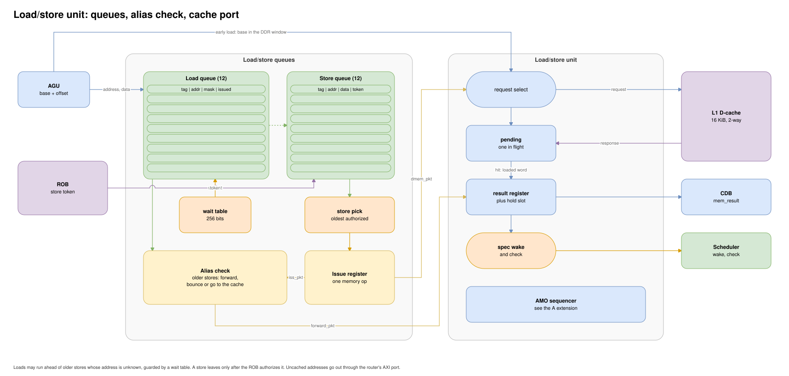

Load Store Unit¶
The load store unit is the memory side of the backend. The AGU computes each address, the load and store queues keep memory ops in order, forward store data to loads and hold stores until they commit, and the LSU talks to the D-cache. Loads and stores issue from scheduler port 2 like everything else (issue), and atomics go the same way (A extension).


The RTL is lsq.sv in rtl/cpu/5-issue/ and agu.sv and lsu.sv in rtl/cpu/6-execute/.
Each load and store gets a scheduler entry and a queue slot at dispatch. Once its registers are ready the scheduler issues it, register read gives the base, immediate and store data, and the AGU’s result fills the queue entry by ROB tag. The queues never watch the result buses.
AGU¶
The AGU adds base and offset, checks alignment and sends the address (and store data) to the queues without using a result bus. A misaligned address faults and never reaches memory.
A second adder makes the same address just for the queue compares, since the main sum fans out to every entry.
The uncached test (DMA region or device) only needs bits 31 to 14, since those regions start on 16 KiB boundaries, so it computes both upper sums and picks one with the low carry. It resolves a few carry stages before the full address.
Load/Store Queue¶
The load queue has 12 entries, allocated in order, issued out of order and freed at retirement, so a late store address can still check them. The store queue is a 12-entry FIFO that drains in order. Within a queue, age is position. Across queues, each load counts how many stores were older when it came in, and each store pop decrements it, which takes one small counter per load instead of a 576-bit age matrix.
Each entry’s address and byte mask live in flops that only load when that entry’s AGU result arrives, so allocation never clears them. The issue stage reads one entry a cycle, so two LUT RAM copies serve it by index: the store address, and a picked load’s tag, destination, width and address. The flops still feed the parallel compares. The load queue head moves past at most two free slots a cycle, since two loads retire a cycle.
Why LUT RAM copies. Reading the picked load from a copy instead of a 12-way select took the queue from 2,282 to 2,087 LUTs. The same copy for the store pick saved 52 more, but the store’s index comes from the D-cache’s ready, and the RAM read on that path cost 0.66 ns, so the store pick still reads the flops.
Forwarding¶
For each load, against every older store:
Case |
Result |
|---|---|
an older store has no address and the load’s wait bit is set |
stall |
the youngest overlapping store has no data yet |
stall |
it covers the whole load |
forward |
it covers part of the load |
stall until it drains |
it’s an atomic |
stall until it drains |
I don’t merge store bytes with cache bytes, so a partial overlap just waits. Masking out every candidate that has a younger overlapping store finds the youngest one without a serial chain across twelve stores.
Load Speculation¶
A load only waits on older stores with unknown addresses when its bit is set in a 256-entry table indexed by PC. When a store address arrives, the queue compares it with every younger load that already ran. The oldest overlap sets its table bit and goes to the ROB, which reruns it from the head (commit). A sweep clears one table entry every 512 cycles, so a load that stops colliding gets to speculate again. A stale bit can only slow a load down.
Memory Arbitration¶
One memory op reaches the LSU a cycle. Loads go first, since committed stores are already done as far as the program knows and loads sit on dependency chains. When the store queue is nearly full, stores go first so it keeps draining.
Why loads can leave from the AGU. A load whose table bit allows it and whose base keeps it in the cacheable window sends its cache request straight from the AGU in the same cycle. It still gets the forwarding check a cycle later, and a forward or stall cancels the response. That saves a cycle of load-to-use for most loads. The check only runs for the picked load (1 x 16 compares instead of 16 x 16), using word-match bits kept as addresses arrive.
Uncached loads wait until they’re at the ROB head with no pending stores, so devices never see a speculative read.
Flush¶
The queues only react to the back-end flush: every load dies and committed stores stay. Committed stores are the oldest stores and older than every load, so the keep mask is a per-entry test and needs no age compare.
LSU¶
The LSU connects the queues to the D-cache and lines up byte lanes. It tracks one transaction, and a new request can leave as the last response comes back. A flush flips an epoch bit, so responses for killed requests drain without effect.
Why every load result is registered. The register keeps the cache hit out of bus arbitration and wakeup. It costs a cycle of load-to-use, and speculative wakeup wins it back: the load announces its destination a cycle after the cache takes it, consumers get picked for the expected data cycle, and a check a cycle later replays them on a miss, a full register or a forward.
An uncached store’s write response goes to the ROB, so an AXI error becomes a precise fault. A cacheable store already retired, so its response is just dropped. Atomics run a read, compute, write sequence that holds the cache port until it’s done (A extension).
Limits¶
One-bit load speculation table, no store sets.
A store generates its address only once its data is ready.
A partial overlap stalls the load.
One memory op a cycle across both queues, and a blocked store at the head blocks all draining.